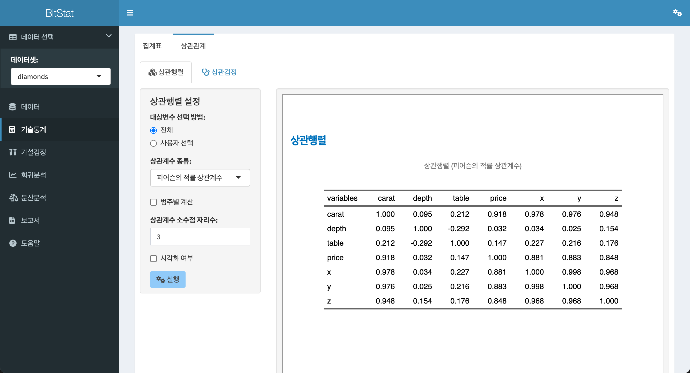
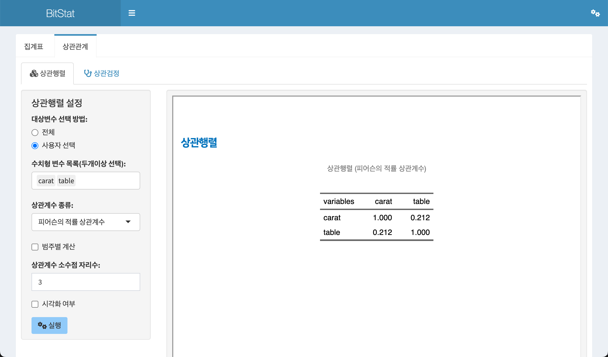
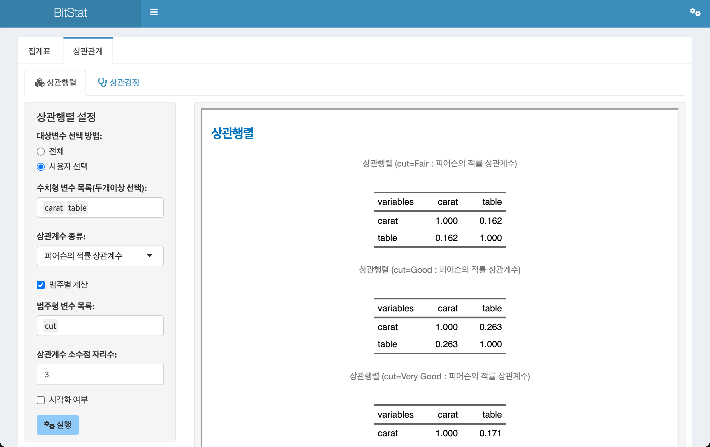
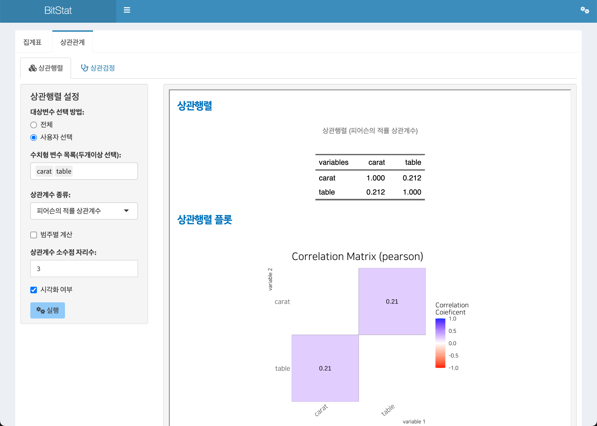
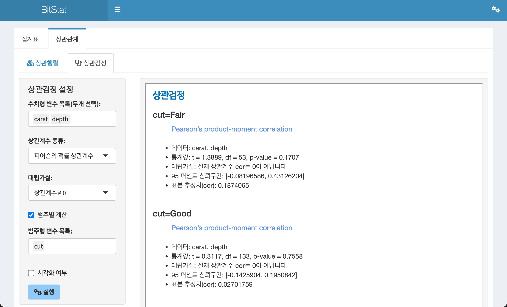

11 상관관계
수치형 변수의 상관관계를 분석합니다. 상관행렬을 구하고 상관행렬을 시각화하며, 상관검정과 두 변수의 상관관계 플롯으로 변수의 관계를 쉽게 파악할 수 있도록 도와줍니다.
11.1 상관관계 기능
상관관계 메뉴에서는 수치형 변수의 상관행렬과 두 수치형 변수의 상관검정을 수행하고 산점도를 시각화합니다.
- 상관행렬(correlation matrix)
- 상관검정(correlation test)
11.1.1 상관행렬
수치형 변수들의 상관행렬(correlation matrix)을 작성하고, 상관행렬도(correlation matrix plot)를 시각화합니다.
상관행렬 기능은 기술통계 > 상관관계 > 상관행렬의 메뉴 체계로 접근합니다.
11.1.1.1 상관행렬 계산을 위한 입력 위젯
- 대상변수 선택 방법:
- 레디오 버튼으로
전체와사용자 선택에서 하나를 선택합니다. - 전체
- 기본 설정값으로 모든 수치형 변수를 분석 대상으로 선정합니다.
- 사용자 선택
- 사용자가 분석할 수치형 변수를 선택합니다.
- 사용자 선택을 체크하면,
수치형 변수 목록(두개이상 선택):리스트 박스가 나타납니다.
- 레디오 버튼으로
- 수치형 변수 목록(두개이상 선택):
대상변수 선택 방법:에서사용자 선택을 지정했을 때만 나타납니다.- 모든 수치형 변수에서 두개 이상의 변수를 선택할 수 있습니다.
- 상관계수 종류:
- 계산할 상관계수의 종류를 선택합니다.
피어슨의 적률 상관계수,켄달의 적률 상관계수,스피어만의 적률 상관계수에서 선택합니다.피어슨의 적률 상관계수가 기본 선택됩니다.
- 범주별 계산
- 수치형 변수의 상관행렬을 범주형 변수들의 레벨별로 그룹핑하여 계산하는 기능입니다.
- 체크박스 위젯을 체크하면 범주별 계산을 위한
범주형 변수 목록:이 나타납니다.
- 범주형 변수 목록:
- 수치형 변수들의 상관행렬을 범주형 변수들의 레벨별로 그룹핑할 범주형 변수를 선택합니다. 하나 이상의 범주형 변수를 선택할 수 있습니다.
- 상관계수 소수점 자리수:
- 계산된 상관계수의 소수점 이하 자리수를 지정합니다.
- 기본값은 3이며, 사용자가 선택할 수 있습니다.
- 시각화 여부
- 상관행렬와 함께,
상관행렬도(correlation matrix plot)을 함께 출력할지의 여부를 선택합니다. - 체크박스를 체크하면 플롯도 함께 출력됩니다.
- 상관행렬와 함께,
11.1.1.2 기본 상관행렬 출력
상관행렬에서 상관행렬을 출력하는 방법은 데이터셋: 리스트박스에서 diamonds 데이터를 선택을 전제로 소개합니다.
기술통계 > 상관관계 > 상관행렬의 기본 설정으로 실행 버튼을 클릭하면 오른쪽 결과 영역에 상관행렬이 출력됩니다.
이 기본 설정은 다음과 같습니다.
- 대상변수 선택 방법:
- 전체
- 상관계수 종류:
피어슨의 적률 상관계수
- 통계량 소수점 자리수:
- 3

11.1.1.3 사용자 변수선택 상관행렬 출력
전체 수치형 변수가 아닌, 사용자가 출력할 수치형 변수를 선택할 수 있습니다. 이 예제에서는 caret, table 두 변수를 선택합니다.
상관행렬을 위한 설정은 다음과 같이 정의되었습니다.
- 대상변수 선택 방법:
- 사용자 선택
- 수치형 변수 목록(두개이상 선택):
caret,table
- 통계량 소수점 자리수:
- 3
상기 조건으로 실행하면 다음과 같은 상관행렬이 출력됩니다.

11.1.1.4 범주별 수치형 변수 상관행렬 출력
범주별 계산 체크 박스를 체크하면, 선택한 범주형 변수의 수준(levels)별로 수치형 변수의 상관행렬을 계산할 수 있습니다.
다음 그림처럼 범주별 계산 체크 박스를 체크하여 나타난 범주형 변수 목록:에서 범주형 변수인 cut을 선택합니다.
상관행렬을 위한 설정은 다음과 같이 정의되었습니다.
- 대상변수 선택 방법:
- 사용자 선택
- 수치형 변수 목록(두개이상 선택):
caret,table
- 범주별 계산
- 체크
- 범주형 변수 목록:
cut
- 통계량 소수점 자리수:
- 3
상기 조건으로 실행하면 다음과 같은 집계 상관행렬이 출력됩니다.

11.1.1.5 시각화와 함께 상관행렬 출력
상관행렬은 여러 수치형 변수의 조합으로 구성된 통계량의 행렬구조입니다. 이 구조를 시각화하면 좀 더 쉽게 변수들의 관계를 파악할 수 있습니다.
시각화 여부 체크 박스를 체크하면, 수치형 변수들의 관계를 파악할 수 있는 상관행렬도(correlation matrix plot)을 함께 출력할 수 있습니다.
다음은 시각화 여부 체크 박스를 체크한 경우의 결과입니다. 상관행렬에 출력된 구도와 유사한 플롯이 출력됩니다.

11.1.2 상관검정
두 수치형 변수의 상관검정을 수행하고, 두 변수의 관계를 산점도 기반으로 시각화합니다.
상관검정 기능은 기술통계 > 상관관계 > 상관검정의 메뉴 체계로 접근합니다.
11.1.2.1 상관검정을 위한 입력 위젯
- 수치형 변수 목록(두개 선택):
- 모든 수치형 변수 중에서 상관관계를 검정할 두개의 변수를 선택합니다.
- 상관계수 종류:
- 계산할 상관계수의 종류를 선택합니다.
피어슨의 적률 상관계수,켄달의 적률 상관계수,스피어만의 적률 상관계수에서 선택합니다.피어슨의 적률 상관계수가 기본 선택됩니다.
- 대립가설:
- 상관검정을 위한 대립가설(alternative hypothesis)을 설정합니다.
상관계수 ≠ 0,상관계수 < 0,상관계수 > 0에서 선택합니다.상관계수 ≠ 0가 기본 선택됩니다.
- 범주별 계산
- 두 수치형 변수의 상관검정을 범주형 변수들의 레벨별로 그룹핑하여 계산하는 기능입니다.
- 체크박스 위젯으로 체크하면 범주별 계산을 위한
범주형 변수 목록:이 나타납니다.
- 범주형 변수 목록:
- 두 수치형 변수의 상관검정 결과를 범주형 변수들의 레벨별로 그룹핑할 범주형 변수를 선택합니다. 하나 이상의 범주형 변수를 선택할 수 있습니다.
- 두 수치형 변수의 상관검정 결과를 범주형 변수들의 레벨별로 그룹핑할 범주형 변수를 선택합니다. 하나 이상의 범주형 변수를 선택할 수 있습니다.
- 시각화 여부
- 상관검정 결과와 함께, 두 수치변수의 관계를 파악할 수 있는
산점도(scatter plot)을 함께 출력할지의 여부를 선택합니다. - 체크박스를 체크하면 플롯도 함께 출력됩니다.
- 상관검정 결과와 함께, 두 수치변수의 관계를 파악할 수 있는
11.1.2.2 기본 상관검정 출력
기술통계 > 상관관계 > 상관검정의 기본 설정으로 실행 버튼을 클릭하면 오른쪽 결과 영역에 상관검정 결과가 출력됩니다.
이 기본 설정은 다음과 같습니다.
- 수치형 변수 목록(두개 선택):
caret,depth
- 상관계수 종류:
피어슨의 적률 상관계수
- 대립가설:
상관계수 ≠ 0
- 시각화 여부
- 미 체크

11.1.2.3 범주별 상관검정
범주별 계산 체크 박스를 체크하면, 선택한 범주형 변수의 수준(levels)별로 두 수치형 변수의 상관검정을 수행합니다.
다음 그림처럼 범주별 계산 체크 박스를 체크하여 나타난 범주형 변수 목록:에서 범주형 변수인 cut을 선택합니다.
상관검정을 위한 설정은 다음과 같이 정의되었습니다.
- 수치형 변수 목록(두개 선택):
caret,depth
- 상관계수 종류:
피어슨의 적률 상관계수
- 대립가설:
상관계수 ≠ 0
- 범주별 계산
- 체크
- 범주형 변수 목록:
cut
상기 조건으로 실행하면 다음과 같은 상관검정 결과가 출력됩니다.

11.1.2.4 시각화를 포함한 상관검정
시각화 여부 체크 박스를 체크하면, 상관검정 결과와 함께 두 수치변수의 관계를 파악할 수 있는 산점도(scatter plot)를 출력합니다.
다음은 시각화 여부 체크 박스를 체크한 경우의 결과입니다.